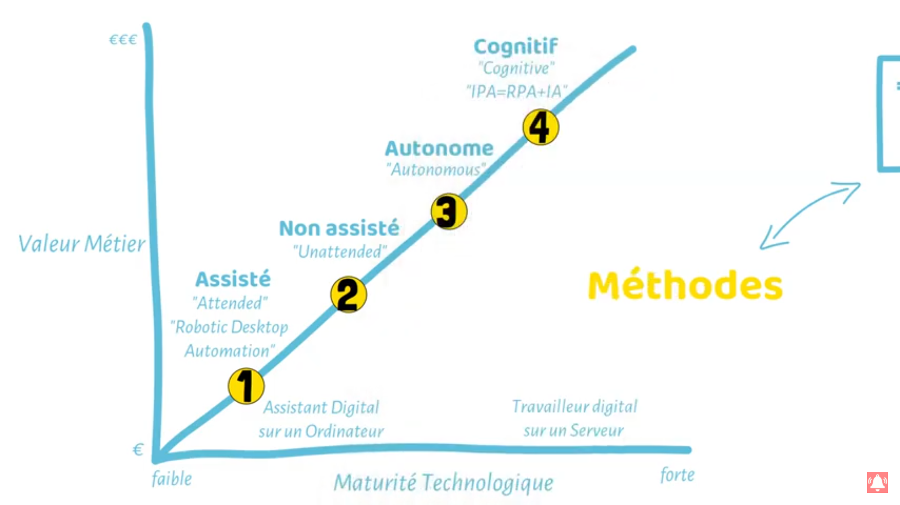

PRESENTATION DU RPA :
Le RPA Qu’est ce que c’est ?
Le RPA, soit Robotic Process Automation est une technologie d’automatisation de processus utilisant des robots qui ont pour but de remplacer l’homme dans les tâches répétitives, longues, routinières et fastidieuses et ce de manière plus ou moins autonome.
Les différentes méthodes et niveaux de maturité du RPA :
Il existe différentes méthodes et niveaux de maturité du RPA. Le RPA existe depuis 40 ans mais c’est seulement aujourd’hui qu’il est en pleine essort. Durant ces 40 ans les technologies derrière le RPA ont évolués. Ainsi, on peut noter 4 phases de maturité lié au RPA:
- Le premier type de RPA est le RPA assisté ou «Attended», «Robotic Desktop Automation». Ce RPA est partiellement automatisé et agis en tant qu’assistant virtuel (Copier coller ou opération simple sur demande de l’utilisateur.)
- Le deuxième type de RPA est le RPA non assisté ou «unattended» travail en «backoffice» (administration au sein d’une entreprise) et permet de récupérer plusieurs fichiers (mail, données) et de les injectés dans un ficher de manière plus ou moins autonome.
- Le troisième type de RPA est le RPA 3.0 ou le RPA Autonome apporte en plus de la scalabilité (désigne la capacité d'un produit à s'adapter à un changement d'ordre de grandeur de la demande). Donc le RPA sera généralement sur des serveurs ou il s’adaptera en fonction de la grandeur de la tâche et s’arrêtera pour éviter de consommer des ressources pour rien.
- Le quatrième type de RPA est le RPA 4.0 Cognitif aussi appelé Cognitive RPA qui est le mix entre intelligence artificielle* et RPA (IA + RPA = IPA pour Intelligence process automation). Il permet d’analyser les données non structurées, de faire de l’analyse prédictive et de la détection automatique de texte ect…
*L'intelligence artificielle (IA) est un processus d'imitation de l'intelligence humaine qui repose sur la création et l'application d'algorithmes exécutés dans un environnement informatique dynamique. Son but est de permettre à des ordinateurs de penser et d'agir comme des êtres humains. ... Des systèmes informatiques.
Fonctionnalité du RPA :
- Reproduire des actions humaines :
Copier Coller, remplir des formulaires, déplacer des documents et des données, consolider des données et exporter / importer.
- Automatiser des tâches associées à des règles :
Exécuter une procédure, faire des calculs, récupérer de l’information par le scraping(Le scraping ou crawling se fait en deux étapes : le téléchargement, du code HTML de la page à scraper, et son parsing) et faire des contrôles.
- Automatiser des tâches entre applications :
Accéder et lire des bases de données, accéder à des ERPs qui n’ont pas d’API, se connecter à des API et les requêter, gestion de file d’attente.
Les domaines et cas d’usages courant du RPA :
Quelques exemples pour comprendre ou est utilisé le RPA :
-
Banque et services financiers :
Gestion des prêts, exécution des transactions, clôtures comptables, audits, gestion de risques
-
Assurances :
Gestions de réclamations, d’appels.
-
Retail :
Gestion d’inventaires, de promotions, retours.
La Valeur Métier du RPA et quelques détails :
Quand on automatise, on gagne du temps et de l’argent. Un programme RPA mettra beaucoup moins de temps à faire ce qu’une personne constituée de chair et d’os pourrait faire, et c’est le but. Il tape des paragraphes entiers aussi vite que nous aurions eu seulement le temps de saisir un seul caractère sur notre clavier, il ne déplace pas mais « téléporte » carrément le curseur de la souris à l’endroit désiré de l’écran, il retient rapidement une grande quantité d’information, il ne s’essouffle pas entre chaque action utilisateur, il calcule instantanément… Bref il va très vite et son seul frein est généralement le temps de réponse du système sur lequel il travaille.
L’automate est prêt à travailler à n’importe quel moment, que ce soit le jour et la nuit, en semaine et en week-end, sans demander une quelconque rémunération en retour. Seulement du courant électrique. De plus, on ne pourra lui reprocher la qualité de son travail effectué. Il ne se distrait jamais et exécute à la lettre toutes les actions du processus. Il ne peut pas se tromper de bouton ou de commettre une faute de frappe. Si c’était le cas, alors c’est le développement et/ou le processus même qui est à remettre en question.
En ce qui concerne les inconvénients dans l’automatisation des processus informatiques, il y a sûrement le temps de développement qui est à prendre en considération, notamment dans les processus complexes. Les programmes RPA restent encore pour la plupart de simples automates et n’ont pas la capacité à s’adapter face à un changement qui viendrait bouleverser le scénario prévu.
Le point faible d’une RPA est sa capacité quasi-nulle à s’adapter à toute nouvelle situation. Il faut prendre en considération toutes les possibilités afin que le programme n’échoue pas. Selon la complexité du processus à automatiser, il est difficile de prévoir tous les scénarios. Or il suffit qu’à un moment, l’automate fasse face à un scénario qu’il ne sait pas gérer pour que le processus soit interrompu, et que par conséquent la réalisation de la tâche soit compromise.
Il n’est pas intelligent et ne fait que suivre les ordres donnés. Un problème typique est l’apparition inopinée de fenêtres d’alertes par exemple. Comment tenir compte des alertes systèmes ou logicielles au programme RPA si nous-mêmes nous ne les connaissons pas toutes à l’avance ou que nous ne les comprenons pas ?